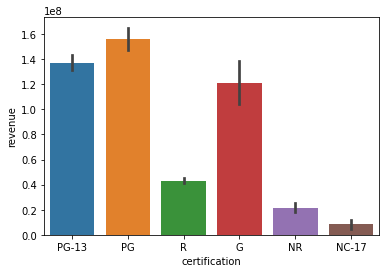
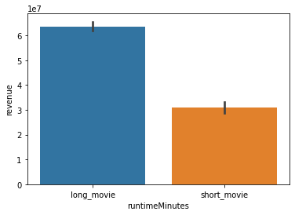
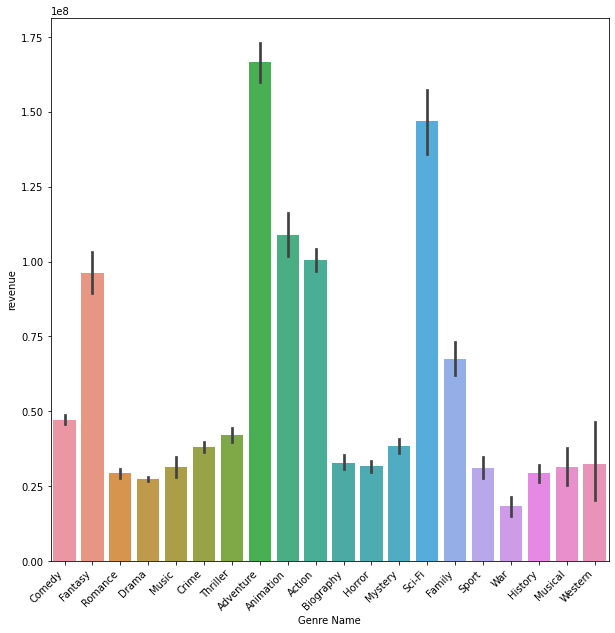
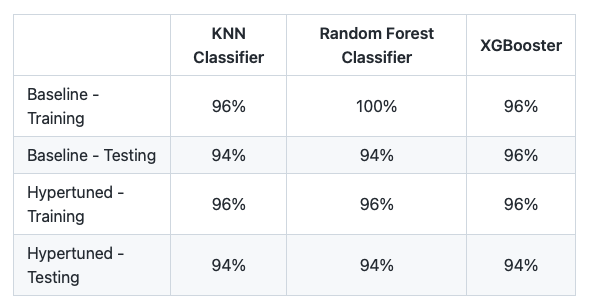

My Side Coding Projects
During my coding journey, I have done a lot of side projects to determine what my passion is. Join me as you learn some of the things I have done.
How To Make The Best Movies
Here I created a couple hypothesis models to determine what makes the best movies.
Below is a summary graph comparing movies and revenues. My hypothesis model determined that the MPAA rating of movies does significantly affect how much revenue a movie makes
Another graph here showed that movies that are 2.5 hours long earn significantly more than movies that are 1.5 hours or less
Another graph here showed that genres of the movie affect significantly how much revenue a movie generates
Stroke Prediction Dataset
This dataset was imported, cleaned, and visualized to create a machine learning model that can determine if a patient is likely to get a stroke based on metabolic features provided. Below is a chart with accuracy comparisons of each model
Personal Website - Karate and Mental Illness
I created a personal website that talked about mental illness and how martial arts helped me jump over some of those obstacles
You can see my personal website by following this link